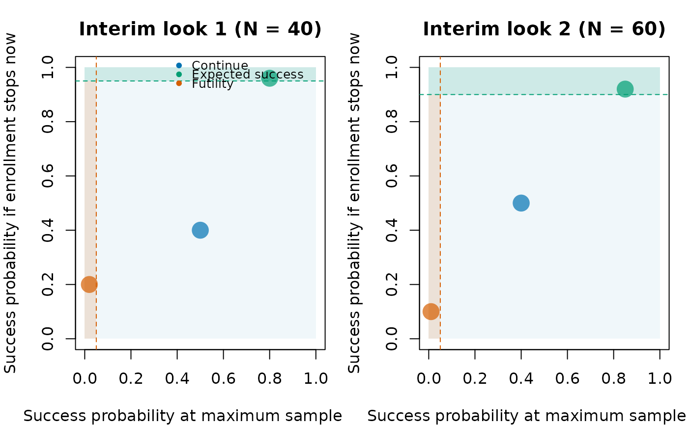

Draws one decision map per interim look across simulated trials. The horizontal axis is the predictive probability of success if enrollment continues to the maximum sample size, and the vertical axis is the predictive probability of success if enrollment stops at the current sample size. Shaded regions and dashed lines show the futility, continuation, and expected-success rules. Identical points are aggregated; point size indicates their frequency.
Arguments
- x
A simulation result returned by
sim_trials()withreturn_trace = TRUE, or itstracesdata frame.
Examples
traces <- data.frame(
trial = 1:6,
look = rep(c(1, 2), each = 3),
planned_N = rep(c(40, 60), each = 3),
ppp_stop_now = c(0.96, 0.4, 0.2, 0.92, 0.5, 0.1),
success_threshold = rep(c(0.95, 0.9), each = 3),
ppp_success_at_max = c(0.8, 0.5, 0.02, 0.85, 0.4, 0.01),
futility_threshold = 0.05,
decision = c(
"stop_expected_success", "continue", "stop_futility",
"stop_expected_success", "continue", "stop_futility"
)
)
plot_sim_decisions(traces)
